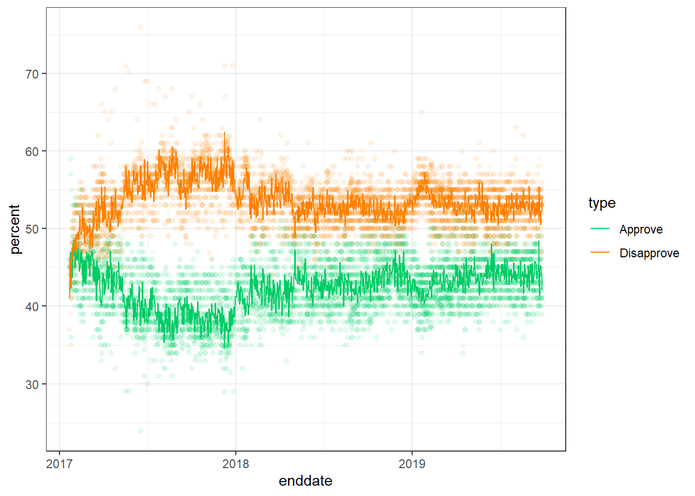
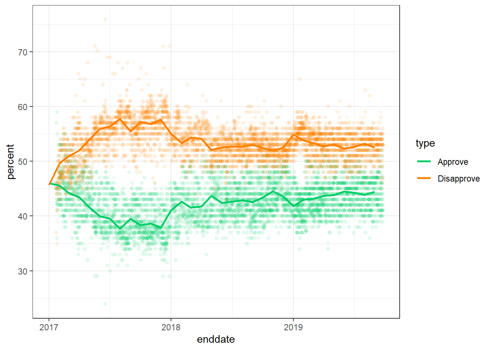
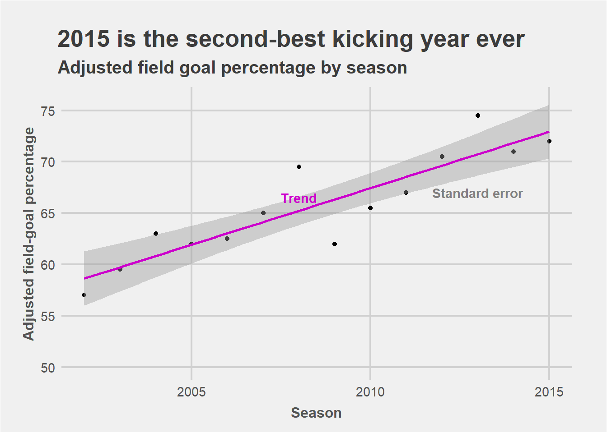

TrangQuach Visualization
Fail for first trial
My first plot chosen to do this excercise is

poll <- read.csv("C:/Users/Trang Ho Thu Quach/Documents/EPID8060/Module 7/trump-approval-ratings/approval_polllist.csv", header = TRUE, sep = ",")
library(tidyverse)
library(zoo)##
## Attaching package: 'zoo'## The following objects are masked from 'package:base':
##
## as.Date, as.Date.numericpart1 <- poll %>%
select(-disapprove) %>%
rename(percent = approve) %>%
mutate(type ='Approve')
part2 <- poll %>%
select(-approve) %>%
rename(percent = disapprove) %>%
mutate(type ='Disapprove')
poll1 <- bind_rows(part1, part2)
# This data has multiple points per date, so I calculate the mean of y for everyday
poll2 <- poll1 %>% mutate(enddate = as.Date(enddate,"%m/%d/%Y")) %>%
mutate(day=as.numeric(format(enddate, '%d')),
month=as.numeric(format(enddate,'%m')),year= as.numeric(format(enddate, '%Y'))) %>%
group_by(type, year, month, day) %>%
summarise(percent = mean(percent)) %>%
ungroup() %>%
mutate(enddate = sprintf("%d-%02d", year, month)) %>%
mutate(enddate = as.Date(as.yearmon(enddate)))
#Plot using stat_summary with fun.y=mean. The line is too rough
poll1 %>% mutate(enddate = as.Date(enddate,"%m/%d/%Y")) %>%
ggplot(aes(enddate, percent, color=type))+
geom_point(alpha=0.05) +
stat_summary(geom = "line", fun.y = "mean")+
#stat_summary( fun.data = 'mean_sdl', fun.args = list(mult = 1), geom = 'smooth')+
scale_color_manual(values = c("#00CC66","#FF8000"))+
theme_bw()
#Plot the mean of y everyday vs. date. The issue is that the line is too smooth
poll1 %>% mutate(enddate = as.Date(enddate,"%m/%d/%Y")) %>%
ggplot(aes(enddate, percent, color=type))+
geom_point(alpha=0.05) +
stat_summary(data=poll2, fun.data = 'mean_sdl', fun.args = list(mult = 1), geom = 'smooth')+
scale_color_manual(values = c("#00CC66","#FF8000"))+
theme_bw()
The issue with my first trial is that
The line I created can only be too smooth or too rough, although I tried many way of summary for y, such as mean of y everyday, mean of y every 3 days, and mean of y every month.
I cannot create the 95% confident interval to coverage 95% of the points
I find very useful code stat_summary to handle this situation in this link So, I have to skip this example and move to another one.
The original plot
You can find the graph here

play <- read.csv("C:/Users/Trang Ho Thu Quach/Documents/EPID8060/Module 7/data.csv")
library(tidyverse)
str(play)## 'data.frame': 14 obs. of 2 variables:
## $ percent: num 57 59.5 63 62 62.5 65 69.5 62 65.5 67 ...
## $ Season : int 2002 2003 2004 2005 2006 2007 2008 2009 2010 2011 ...labels <- data.frame( notation = c("Standard error", "Trend"), x=c(2013,2008),
y= c(67, 66.5))
play %>% ggplot(aes(Season, percent)) +
geom_point() +
geom_smooth(method = 'lm', color = "#CC00CC") +
# label on the graph
geom_text(data=labels, aes(x, y, label = notation),
fontface="bold", color=c("#808080", "#CC00CC")) +
xlab("Season") +
ggtitle("2015 is the second-best kicking year ever",
subtitle = 'Adjusted field goal percentage by season') +
theme_bw() +
# Set the entire chart region to a light gray color
theme(panel.background=element_rect(fill="#F0F0F0")) +
theme(plot.background=element_rect(fill="#F0F0F0")) +
theme(panel.border=element_rect(colour="#F0F0F0")) +
# format the grid
theme(panel.grid.major=element_line(colour="#D0D0D0",size=.75)) +
scale_x_continuous(minor_breaks=0,breaks=seq(2000,2015,5),limits=c(2002,2015)) +
scale_y_continuous(minor_breaks=0,breaks=seq(50,75,5),limits=c(50,76)) +
theme(axis.ticks=element_blank()) +
# theme for title and axis
theme(plot.title=element_text(face="bold",hjust=-.08,vjust=2,colour="#3C3C3C",size=20)) +
theme(plot.subtitle=element_text(face="bold",hjust=-0.02,vjust=2,colour="#3C3C3C",size=15))+
ylab("Adjusted field-goal percentage") +
xlab("Season") +
theme(axis.text.x=element_text(size=11,colour="#535353")) +
theme(axis.text.y=element_text(size=11,colour="#535353")) +
theme(axis.title.y=element_text(size=12,colour="#535353",face="bold",vjust=1.5)) +
theme(axis.title.x=element_text(size=12,colour="#535353",face="bold",vjust=-.5)) +
theme(plot.margin = unit(c(1, 1, .5, .7), "cm")) 
The wide of 95% confident interval in original graph is larger than the replicated one. I try other methods in geom_smooth to see how 95% CI change. It does not change.
I also try to increase the width for y-axis. I find many sources in the internet, but it does not work too.
To format the grid, theme, and title, I found this page is helpfull. You can find it here